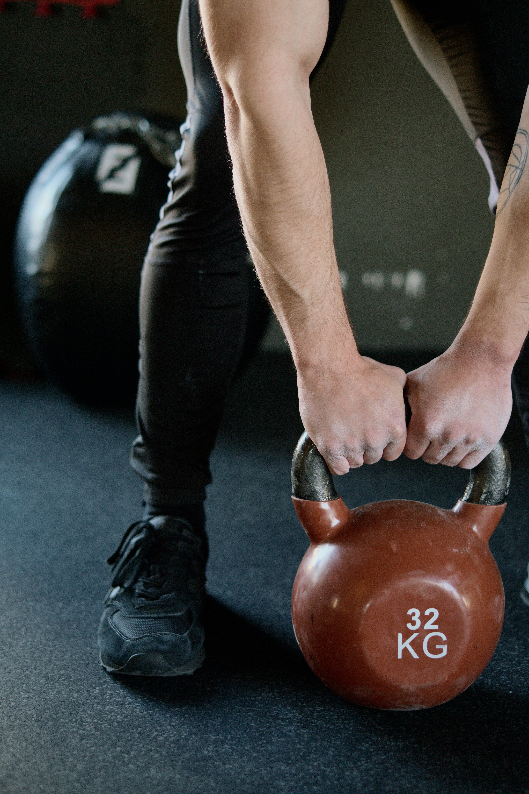

Galerija

SNAGA

HIPERTROFIJA

Za sve kojima je cilj da izgrade jak temelj u olimpijskim disciplinama dizanja tegova kao i powerlifting-u, ojačaju ligamente i pravilno izvode osnovne vežbe snage.
Mišićna hipertrofija je proces rasta mišićne mase kroz povećanje veličine mišićnih vlakana uz pravilnu ishranu i adekvatan odmor.
Kondicioni trening je posebno namenjen onima koji žele da se reše viška kilograma i olakšaju sebi obavljanje svakodnevnih aktivnosti.

Fizčke promene nisu jedini benefiti kod treniranja. Trening te čini boljom osobom u emotivnom i mentalnom smislu.

Dnevna rutina i disciplina će te odvratiti od konzumiranja štetnih sadržaja interneta i dangubljenja.

Kombinacijom kardio treninga sa treningom snage ćeš regulisati nivo šećera u krvi i insulina.
"Otkako sam pre dve godine počeo da treniram promene koje sam imao na fizičkom, mentalnom i emocionalnom nivou su bile ogromne. Ne samo da sam smršao i dobio mišiće, takođe sam ojačao psihički i dobio na samopouzdanju. Sve to mi je pomoglo da se lakše nosim sa novim izazovima u životu."

"Počela sam da treniram po preporuci prijateljice. Kardio svakog drugog dana je transformisao moje telo, raspoloženje i energiju na načine koje nisam očekivala. Mislila sam da je kardio gubljenje vremena, ali sada je to moj omiljeni način da ostanem aktivna."